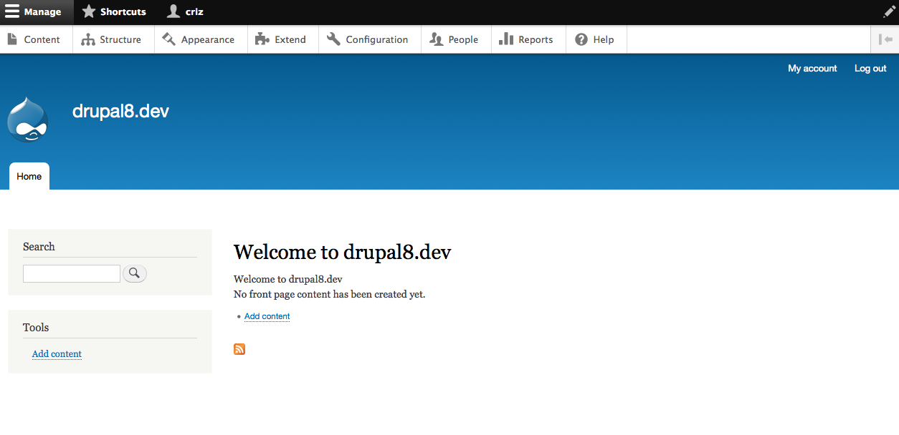

Drupal 8 Theming
#d8day
Christian Ziegler
- Drupal seit 2005
- Sitebuilding + Frontend
- Drupal Austria Obmann
Was ist neu in
Drupal 8?
Was ist neu in Drupal 8?
- Mehr HTML5
- WAI-ARIA Roles
- 75% weniger IDs ...
- Alles responsive
- Neue Theme-engine (TWIG)
Was ist neu in Drupal 8?
- Keine JavaScript Library Vorgaben
- SVG-Icons statt PNGs
- Kein Support für IE6, IE7 und IE8
- Neues Core-Theme Classy
- CSS Vorgaben (SMACSS & BEM)
Drupal 8 Core Themes
Seven
Bartik
Stark
Wie erstelle ich ein neues Theme?
1) THEME-NAME.info.yml anlegen und befüllen
name: THEME-NAME
description: 'A short description for the theme.'
package: Custom
type: theme
version: 1.0
core: 8.x
2) Regionen definieren
Was sind Regionen?{kind=link}
regions:
header: 'Header'
content: 'Content'
sidebar_first: 'Sidebar first'
sidebar_second: 'Sidebar second'
footer: 'Footer'
regions_hidden:
- sidebar_first
3) CSS anlegen und definieren
stylesheets:
all:
- css/base.css
- css/layout.css
- css/components.css
print:
- css/print.css
CSS-Dateien entfernen oder überschreiben
# Overwrite a CSS file:
stylesheets-overwrite:
- normalize.css
# Remove a CSS file:
stylesheets-remove:
- normalize.css
Change record: https://www.drupal.org/node/1876600
4) Javascript (libraries) hinzufügen
Anlegen einer neuen Datei: THEME-NAME.libraries.yml
base:
version: 1.x
js:
js/custom.js: {}
dependencies:
- core/drupal
- core/jquery
- core/jquery.once
libraries:
- THEME-NAME/base
Beispiel flexslider:
flexslider:
version: 2.2.2
license:
name: gpl2
url: http://www.gnu.org/licenses/gpl-2.0.html
gpl-compatible: true
remote: https://github.com/woothemes/FlexSlider
js:
lib/flexslider/js/jquery.flexslider-min.js: {}
css:
theme:
lib/flexslider/css/flexslider.css: {}
dependencies:
- core/jquery
Beispiel flexslider:
libraries:
- THEME-NAME/flexslider
Wie erstelle ich ein neues Theme
auf Basis eines vorhandenen?
name: THEME-NAME
description: 'An awesome D8 theme based on classy.'
base theme: classy
package: Custom
type: theme
version: 1.0
core: 8.x
- Das "Sub theme" überschreibt das "Base theme".
- Funktioniert auch mit dem Entfernen (stylesheets-remove) und Überschreibungen (stylesheets-overwrite) von CSS Dateien.
Beispiele: https://www.drupal.org/node/1876600
Breakpoints
THEME-NAME.mobile:
label: mobile
mediaQuery: '(min-width: 0px)'
weight: 0
multipliers:
- 1x
THEME-NAME.narrow:
label: narrow
mediaQuery: 'all and (min-width: 480px) and (max-width: 959px)'
weight: 1
multipliers:
- 1x
- 1.5x
- 2x // For mac retina displays.
- In diesem Fall ist die Breakpoint Gruppe der THEME-NAME
- Noch kein UI hierfür in Drupal 8 Core
- Definierte Breakpoints sind systemweit vorhanden
- Auch Module können Breakpoints definieren
- Benutzt von zB: responsive_images Modul in Core
- != SASS breakpoints http://breakpoint-sass.com
- DrupalCon Amsterdam Session zum Thema: https://amsterdam2014.drupal.org/node/438
ImageStyles
- Möglich durch Drupal 8 Configuration Management System
- Konfigurationsdateien in Ordner THEME/config/install
- Export der Konfiguration: admin/config/development/configuration/single/export
- Theme install: Konfiguration wird übernommen
uuid: 4dacc686-1f91-48af-bb01-1c765f5410a1
langcode: en
status: true
dependencies: { }
name: slider_mobile
label: 'Slider mobile'
effects:
6d437f0f-0ff1-4736-9537-55e26f9ec57d:
uuid: 6d437f0f-0ff1-4736-9537-55e26f9ec57d
id: image_scale
weight: 1
data:
width: 480
height: null
upscale: false
third_party_settings: { }
Debugging
CSS und js Aggregation deaktivieren
- Standardmässig aktiviert: drupal.org/node/2259531
- 1) example.settings.local.php in den Seitenordner kopieren und Datei-Namen ändern: "settings.local.php".
- 2) In der settings.php folgenden code aktivieren:
#if (file_exists(__DIR__ . '/settings.local.php')) { # include __DIR__ . '/settings.local.php'; #}
Devel Modul und Kint Modul installieren
-
Devel Modul:
$ drush dl devel $ drush en devel -
Kint ist Krumo für Drupal 8: raveren.github.io/kint/
$ drush en kint{{ kint($data); }}
Template debugging
- Welches Template wird für das ausgegebene HTML verwendet?
- TWIG debugging aktivieren:
In der services.yml (Seitenordner) folgende Werte aktivieren:
Datei: services.ymlparameters: twig.config: debug: true auto_reload: true twig_cache: false
Template debugging
-> Zusätzl. Informationen im HTML ersichtlich:ESLint
- nodejs Modul: http://eslint.org/
- Überprüft JavaScript auf Fehler und Coding Style
- Konfigurationsdatei .eslintrc in Drupal Core
- Installieren:
$ npm i -g eslint - Ausführen (zB in Drupal Root):
$ eslint .
CSSLint
- nodejs Modul: http://csslint.net/
- Überprüft CSS auf Fehler und Coding Style
- Konfigurationsdatei .csslintrc in Drupal Core
- Installieren:
$ npm install -g csslint - Ausführen (zB im Theme Ordner):
$ csslint .
Coding Standards
CSS Struktur (SMACCS)
- SMACCS: Scalable and Modular Architecture for CSS
- https://smacss.com/
- System für die Organisation und Kategorisierung der CSS-Regeln
CSS Struktur (SMACCS)
- base.css
- layout.css
modules.csscomponents.css- states.css
- theme.css
CSS Klassen (BEM)
- BEM: Block Element Modifier
- https://bem.info/method/definitions/
- Namenskonvention für CSS Klassen
- Modular, konsistent, skalierbar, wartbar
- Visualisierung: http://johnalbin.github.io/flower-power/
CSS Klassen (BEM)
.block__element--modifier
- Block: Eigenständige Einheit oder Komponente einer Seite. Z.B. kleines Kontakformular auf Startseite
- Element: Bestandteile des Blocks. z.B Überschrift, Beschreibung
- Modifier: Konkrete Ausprägung des Blocks. z.B. eine Version mit hervorgehobenen Farben.
CSS Klassen (BEM)
Beispiel:
TITLE
...
Mehr Infos zu Coding Standards
- CSS Coding standards: https://www.drupal.org/node/1886770
- Javascript Coding standards: https://www.drupal.org/node/172169
- Twig Coding standards: https://www.drupal.org/node/1823416
Templates (Twig)
Was ist Twig?
- Moderne, schnelle und flexible PHP Template Engine
- Seit 2009 Bestandteil von Symfony Framework
- Wird weiterentwickelt von SensioLabs.
- Ersetzt phptemplate theme engine in Drupal 8
- twig.sensiolabs.org/
Vorteile von Twig
- Mehr Sicherheit: Kein PHP mehr in den Templates!
db_query('DROP TABLE {users}'); - Mehr Sicherheit: Autoescape
- Keine Mischung von Logik und Darstellung.
- Konsistente und einfache Syntax
- Viele Vereinfachungen für den Themer: zB Wegfall von "theming functions"
- Sehr gute Dokumentation: twig.sensiolabs.org/documentation
- Chance auf Theme-System Neustart in Drupal
Arbeiten mit Twig
Variable ausgeben
{{ VARIABLE }}
Kommentieren
{# COMMENT #}
Mit Datenstrukturen arbeiten
Einfacher Zugang zu hierarchisch angeordneten Daten.
{{ items.first.href }}
{{ items.second.nid }}
Filter
Übergabe der Variable einer Funktion / einem Filter.
{{ VARIABLE|filter }}
{{ String|t }}
IF
{% if foo %}
{{ foo }}
{% endif %}
Loops/Schleifen
{% for item in navigation %}
{{ item.caption }}
{% endfor %}
{% for value, key in items %}
{{ value }}
{% endfor %}
Loops/Schleifen
{{ loop.length }}
{{ loop.first}}
{{ loop.last }}
{{ loop.index }}
{% if loop.first %}
...
{% elseif loop.index == 2 %}
...
{% elseif loop.last %}
...
{% endif %}
Variablen setzen
{% set foo=“BAR” %}
{{ foo }}
Mehrsprachigkeit
{% trans %}
Submitted by {{ author_name|passthrough }}
on {{ date|passthrough }}
{% endtrans %}
Beispiele
- Menu template
- Pager template
Conclusio

Weiterführende Links und Quellen
Weiterführende Links und Quellen
- Drupal 8 theme file structure: https://www.drupal.org/node/1887922
- Replace drupal.base with normalize: https://www.drupal.org/node/2168417
- Drush 7 commands: http://www.drushcommands.com/drush-7x
- Disable css and js aggregation for development: https://www.drupal.org/node/2259531
- Breakpoint added to Drupal 8: https://www.drupal.org/node/1813914
Weiterführende Links und Quellen
- Working with breakpoints in Drupal 8: https://www.drupal.org/node/1803874
- ESLint settings: https://www.drupal.org/node/1955232
- DrupalCon Amsterdam 2014: Twig and the new Drupal 8 Theme System: http://www.youtube.com/watch?v=koNJEyRLwKk
- DrupalCon Amsterdam 2014: Managing Complex Projects With Design Components: https://www.youtube.com/watch?v=0ulC_UiObS0
- DrupalCon Amsterdam 2014: Drupal 8 Breakpoints and Responsive images: https://www.youtube.com/watch?v=xY9Kkm5wBUg
Weiterführende Links und Quellen
- Drupal 8 Theming Guide: https://github.com/sqndr/d8-theming-guide
- Drupal 8 CSS Coding standards: https://www.drupal.org/node/1886770
- Drupal 8 Javascript Coding standards: https://www.drupal.org/node/172169
- Twig Coding standards: https://www.drupal.org/node/1823416
- Twig Documentation: http://twig.sensiolabs.org/documentation